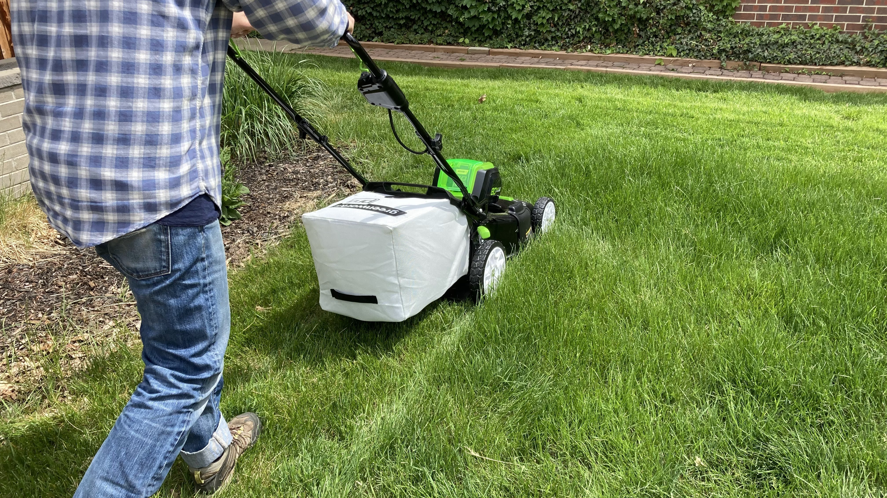

Fertilization and Weed Programs
Every lawn has a unique set of needs. Our annual Fertilization and Weed Programs make it easy to ensure your lawn will look its best all season long. With 6 annual applications, your lawn will have the food it needs to grow into the lush, green landscape you desire. From root growth to weed control, to color, our annual Fertilization and Weed Programs address all common lawn care concerns for a beautiful yard that can be enjoyed year round.
About Us
Best Lawns of Layton, UT, is a locally-owned full-service lawns care company providing fertilization, aeration, outdoor pest control, and soil enrichment solutions. Our services are affordable, and because we’re locally owned and operated, our customers can enjoy a direct line of contact with our owner. We provide referral bonuses and of for annual lawn care programs, carefully designed for results you can count on. With nearly 10 years of experience, we know our programs, as well as the products we use, give results we can confidently stand behind. Contact us today to schedule a free on-site lawn evaluation with our owner and see for yourself why so many local customers choose us.
Fertilization and Weed Programs
Every lawn has a unique set of needs. Our annual Fertilization and Weed Programs make it easy to ensure your lawn will look its best all season long. With 6 annual applications, your lawn will have the food it needs to grow into the lush, green landscape you desire. From root growth to weed control, to color, our annual Fertilization and Weed Programs address all common lawn care concerns for a beautiful yard that can be enjoyed year round.

Service Areas
- Layton
- Syracuse
- Kaysville
- Bountiful
- North salt lake
- Clinton
- surrounding Areas
Hours of Operations
Monday - Friday 8:00 AM - 6:00 PM Saturday 8:00 AM - 12:00 PM After Hour Appointments Available Upon Request Monday - Saturday